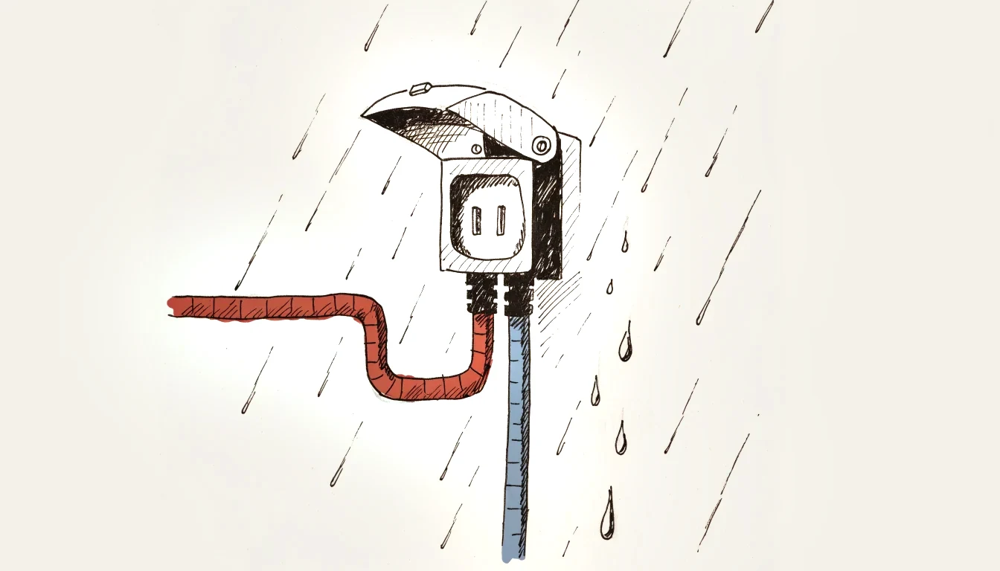
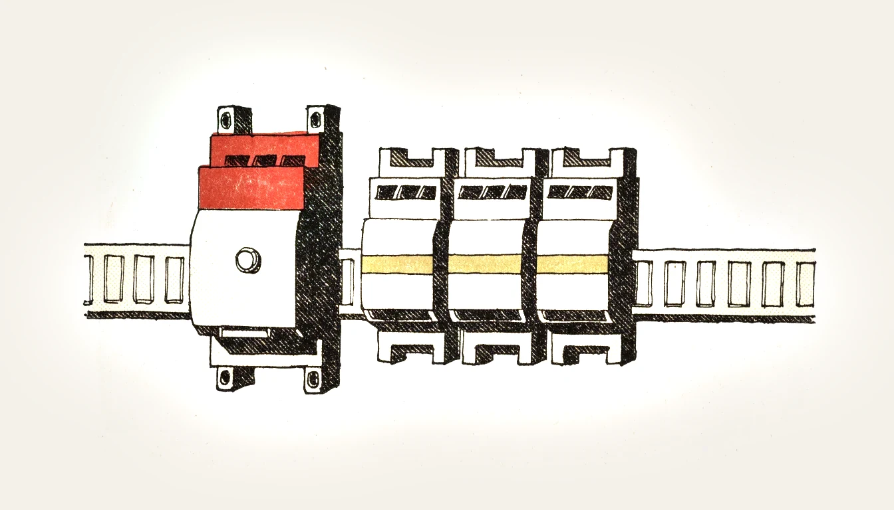
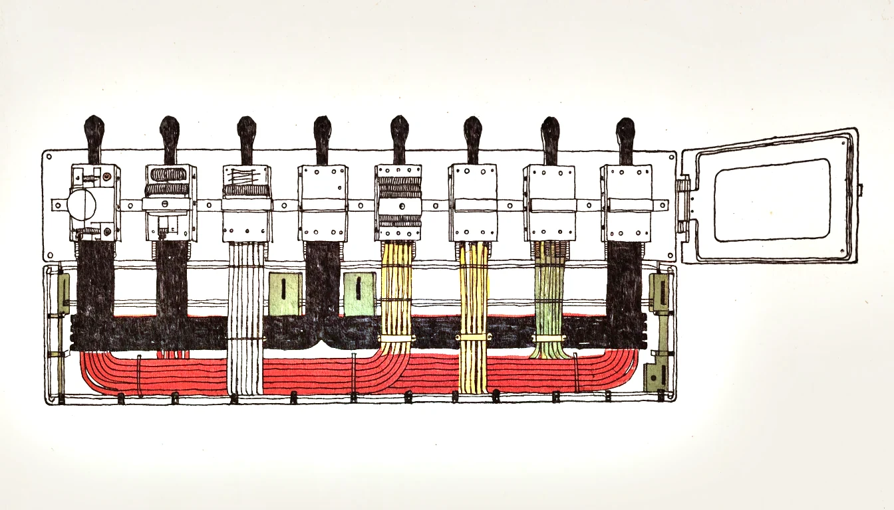

Aufbau · Modelle · Typ A / B · Zeichnung · Prüfung Design · types · type A / B · drawing · testing
Der Fehlerstromschutzschalter (FI/RCD) erkennt einen Differenzstrom zwischen den aktiven Leitern. Er ist ein Teil des Schutzkonzepts: Je nach Anlage übernimmt er Fehlerschutz und mit höchstens 30 mA zusätzlichen Schutz. Basisschutz, Schutzleiter und Überstromschutz bleiben erforderlich. Auch Sicherungen und LS können bei erfüllten Bedingungen Fehlerschutz durch Abschaltung leisten.
An RCD detects residual current in the live conductors. It is part of the protective system: depending on the installation, it provides fault protection and, at no more than 30 mA, additional protection. Basic protection, protective conductors and overcurrent protection remain necessary. Fuses and MCBs can also provide fault protection by disconnection when the required conditions are met.
Gefährliche Körperströme können im Milliamperebereich liegen, weit unter der Überstrom-Auslöseschwelle eines LS. Ein 30-mA-RCD reagiert auf einen geeigneten Differenzstrom. Er begrenzt den Körperstrom aber nicht auf 30 mA; bis zur Abschaltung kann ein deutlich höherer Strom fliessen.
Dangerous body currents can be in the milliampere range, far below an MCB’s overcurrent threshold. A 30 mA RCD responds to an appropriate residual current. It does not limit body current to 30 mA; a much higher current may flow before disconnection.
Der FI erkennt nur Ströme, die den Stromkreis verlassen. Wer gleichzeitig Aussenleiter und Neutralleiter berührt, wird nicht geschützt: Der Strom fliesst hin und wieder zurück, die Summe bleibt null. Der FI ersetzt darum niemals das Freischalten.
The RCD only detects current that leaves the circuit. Anyone touching the line and the neutral at the same time is not protected: the current flows out and back, and the sum stays zero. An RCD therefore never replaces isolating the circuit.

Alle aktiven Leiter des geschützten Stromkreises müssen durch den FI führen. Hinter getrennten RCDs dürfen Neutralleiter nicht vermischt und N und PE nicht verbunden werden. Solche Fehler können insbesondere unter Last eine Auslösung verursachen; ein zunächst eingeschalteter FI beweist keinen korrekten Anschluss.
All live conductors of the protected circuit must pass through the RCD. Neutrals downstream of separate RCDs must not be mixed, and N and PE must not be joined. Such faults may cause tripping, particularly under load; an RCD remaining on does not prove correct wiring.
Moderne Geräte erzeugen im Fehlerfall längst nicht mehr nur saubere Sinus-Wechselströme. Elektronik, Frequenzumrichter und Ladegeräte können Fehlerströme mit Gleichanteil hervorrufen. Ein FI, der diese Form nicht erkennt, ist im Ernstfall blind — schlimmer noch, ein Gleichanteil kann seinen Ringkern vormagnetisieren und ihn auch für normale Wechselfehler unbrauchbar machen.
Modern equipment no longer produces only clean sinusoidal fault currents. Electronics, frequency converters and chargers can cause residual currents with a DC component. An RCD that cannot detect that waveform is blind when it matters — worse, a DC component can pre-magnetise its core and render it useless even for ordinary AC faults.
| TypType | ErfasstDetects | Typischer EinsatzTypical use |
|---|---|---|
| AC | nur sinusförmige Wechselfehlerströmesinusoidal AC residual currents only | für neue Anlagen nicht mehr üblichno longer usual in new installations |
| A | wie AC, zusätzlich pulsierende Gleichfehlerströmeas AC, plus pulsating DC residual currents | Standard im Wohn- und Bürobaustandard in housing and offices |
| F | wie A, zusätzlich Mischfrequenzenas A, plus mixed frequencies | Waschmaschinen und Geräte mit einphasigem Frequenzumrichterwashing machines and equipment with single-phase converters |
| B | wie F, zusätzlich glatte Gleichfehlerströmeas F, plus smooth DC residual currents | z. B. bestimmte Umrichter; Auswahl nach Hersteller und Schutzkonzepte.g. certain converters; select by manufacturer and protection design |
Die Typen unterscheiden sich nach erfasster Stromform und Prüfbedingungen. Typ B ist kein pauschal austauschbarer Ersatz: Frequenzbereich, Netzspannung, Herstellerfreigabe und vorgeschaltete RCDs müssen zusammenpassen. Bei Ladeeinrichtungen kann beispielsweise eine zugelassene Kombination aus Typ A/F und 6-mA-DC-Fehlerstromerkennung vorgesehen sein. Massgebend sind die konkrete Anlage und die Gerätevorgaben.
Types differ in detected waveforms and test conditions. Type B is not a universally interchangeable replacement: frequency range, supply voltage, manufacturer approval and upstream RCDs must be coordinated. For example, charging equipment may use an approved type A/F combination with 6 mA DC residual-current detection. Selection depends on the installation and equipment requirements.
| ZeichenMarking | BedeutungMeaning |
|---|---|
| S | selektiv, zeitverzögert — Koordination mit nachgelagerten RCDs erforderlichselective, time-delayed — coordination with downstream RCDs required |
| G | kurzzeitverzögert, unempfindlicher gegen Störimpulseshort time delay, less sensitive to interference pulses |
| ≈ | Symbol für Wechselfehlerstrom (Typ AC)symbol for AC residual current (type AC) |
| IΔn | ZweckPurpose |
|---|---|
| 10 mA | zusätzlicher Schutz für entsprechend geplante Anwendungenadditional protection for appropriately designed applications |
| 30 mA | Personenschutz — Standard für Steckdosen und Nassbereichepersonal protection — standard for sockets and wet areas |
| 300 mA | Fehler-/Brandschutz nach Anwendung; kein zusätzlicher Schutz ≤ 30 mAfault/fire protection as applicable; not additional protection ≤ 30 mA |
| 500 mA | Fehlerschutz nach Auslegung; nicht automatisch selektivfault protection as designed; not automatically selective |
30 mA ist eine Bemessungsgrenze für den zusätzlichen Schutz, keine Grenze zwischen ungefährlich und tödlich. Die Wirkung auf den Körper hängt unter anderem von Stromstärke, Stromweg und Einwirkdauer ab. Ein geeigneter RCD verkürzt die Einwirkdauer und vermindert das Risiko, bietet aber keine Garantie gegen Verletzungen.
30 mA is a rating limit for additional protection, not a boundary between harmless and lethal current. Effects depend on current magnitude, path and duration. A suitable RCD reduces exposure time and risk but does not guarantee freedom from injury.
| BauformVersion | MerkmalFeature |
|---|---|
| 2-polig2-pole | L und N — für einphasige StromkreiseL and N — for single-phase circuits |
| 4-polig4-pole | L1, L2, L3 und N — für Drehstrom und für GruppenL1, L2, L3 and N — for three-phase and for groups |
| FI-LS (RCBO) | FI und Leitungsschutz in einem Gerät, ein StromkreisRCD and cable protection in one device, one circuit |
| NetzspannungsunabhängigVoltage-independent | Auslöseenergie aus dem Fehlerstrom; Anschlussbedingungen beachtentripping energy from residual current; observe wiring requirements |
| NetzspannungsabhängigVoltage-dependent | benötigt Netzversorgung; Verhalten bei Spannungsausfall laut Datenblattrequires mains power; check data sheet for loss-of-supply behaviour |
Ein FI kann eine ganze Gruppe von Stromkreisen abdecken oder — als FI-LS — nur einen einzigen. Die Gruppenlösung ist günstiger, die Einzellösung deutlich komfortabler: Bei einem Fehler bleibt der Rest der Wohnung in Betrieb, und die Fehlersuche ist sofort eingegrenzt.
One RCD can cover a whole group of circuits or — as an RCBO — just a single one. The group solution is cheaper, the individual solution far more convenient: under a fault the rest of the flat stays in service and fault finding is immediately narrowed down.
Viele elektronische Geräte verursachen betriebsbedingte Ableitströme. Diese können sich hinter einem gemeinsamen RCD addieren und unerwünschte Auslösungen auslösen. Bei der Planung sind die zulässige Summe, Einschaltvorgänge und eine ausreichende Reserve nach Norm und Herstellerangaben zu berücksichtigen; Stromkreise bei Bedarf auf mehrere RCDs verteilen.
Many electronic devices produce operational leakage currents. These can add up downstream of a common RCD and cause unwanted tripping. Design must account for the permitted total, switching transients and adequate margin under the applicable standard and manufacturer instructions; divide circuits between RCDs where necessary.

Die Taste T erzeugt über den internen Prüfkreis einen Differenzstrom und prüft die Funktion der Erfassungs- und Auslösekette. Betätigung und Prüfintervall richten sich nach Hersteller und Einsatzbedingungen. Löst das Gerät nicht aus, muss eine Elektrofachperson die Ursache klären.
The T button produces residual current through an internal test circuit and checks the sensing and tripping chain. Follow manufacturer instructions and application requirements for operation and intervals. If the device fails to trip, an electrically skilled person must investigate.
Die Prüftaste misst weder Auslösestrom noch Auslösezeit und prüft nicht die Durchgängigkeit des Schutzleiters. Eine Fachperson prüft die Schutzmassnahme mit geeigneten Messverfahren. Der Bereich 0,5–1 × IΔn bezieht sich auf sinusförmigen Wechselprüfstrom; für andere Stromformen und RCD-Typen gelten andere Prüfbedingungen.
The test button measures neither tripping current nor time and does not verify protective-conductor continuity. A skilled person verifies the protective measure using suitable tests. The 0.5–1 × IΔn range relates to sinusoidal AC test current; other waveforms and RCD types have different test conditions.
| BeobachtungObservation | Wahrscheinliche UrsacheLikely cause |
|---|---|
| Löst sofort beim Einschalten ausTrips immediately on closing | Isolationsfehler, N nach dem FI mit PE oder fremdem N verbundeninsulation fault, or N joined to PE or another circuit's N downstream |
| Löst nur bei Regen oder Feuchtigkeit ausTrips only in rain or damp | Feuchtigkeit in Aussensteckdose, Leuchte oder Erdkabelmoisture in an outdoor socket, luminaire or buried cable |
| Löst nur beim Einschalten eines Geräts ausTrips only when one appliance starts | Isolationsfehler in diesem Gerät, oft Heizelementinsulation fault in that appliance, often a heating element |
| Löst sporadisch ohne erkennbaren Anlass ausTrips sporadically for no visible reason | Summe der Ableitströme zu gross, oder falscher Typ für die Lasttotal leakage too high, or the wrong type for the load |
| Lässt sich gar nicht mehr einschaltenCannot be closed at all | Fehler steht dauernd an; Stromkreise einzeln zuschalten und eingrenzenthe fault is permanent; switch circuits on one by one to narrow it down |
Einzelnes Zuschalten kann einer Fachperson Hinweise auf den betroffenen Anlagenteil geben. Es ist kein Fehlernachweis: Einpolige LS trennen den Neutralleiter nicht, fremde Neutralleiter oder summierte Ableitströme können das Ergebnis verfälschen. Vor Arbeiten an Leitern freischalten und die Sicherheitsregeln anwenden; Isolations- und Schutzmassnahmenprüfung fachgerecht durchführen.
Switching circuits individually can help a skilled person locate the affected part of an installation. It is not proof of the fault: single-pole MCBs leave neutral connected, and mixed neutrals or accumulated leakage can mislead. Isolate before working on conductors and apply the safety rules; carry out insulation and protective-measure tests correctly.
Wo ein FI vorgeschrieben ist, mit welchem Bemessungsfehlerstrom und welchem Typ, regelt die NIN — unter anderem für Steckdosenstromkreise, Nassbereiche, Aussenanlagen, Baustellen und Ladeeinrichtungen. Die geltenden Artikel vor der Abgabe in der eigenen NIN-Ausgabe nachschlagen, die Anforderungen wurden über die Ausgaben hinweg mehrfach erweitert.
Where an RCD is required, with which rated residual current and which type, is governed by the NIN — among others for socket circuits, wet areas, outdoor installations, construction sites and charging equipment. Look up the applicable articles in your own NIN edition; the requirements have been extended repeatedly across editions.

Nach dem Summenstromprinzip. Alle aktiven Leiter führen durch einen gemeinsamen Ringkern. Im fehlerfreien Kreis ist die Summe der Ströme null. Fliesst ein Teil des Stromes über einen anderen Weg zur Erde ab, entsteht ein Restmagnetfeld, das über die Sekundärwicklung das Auslöserelais ansteuert.
On the core balance principle. All live conductors pass through one common toroidal core. In a healthy circuit the sum of the currents is zero. If part of the current takes another path to earth, a residual magnetic field arises which drives the trip relay through the secondary winding.
Der Schutzleiter. Über ihn fliesst gerade der Fehlerstrom zurück — würde er mitgeführt, wäre die Summe wieder null und der FI würde nichts erkennen.
The protective conductor. It is exactly the path the fault current returns on — if it went through the core, the sum would be zero again and the RCD would detect nothing.
Nein. Der Strom fliesst durch den Körper hin und über den Neutralleiter zurück, beide durch den Ringkern. Die Summe bleibt null, der FI erkennt keinen Fehler. Deshalb ersetzt er niemals das Freischalten und die 5 Sicherheitsregeln.
No. The current flows through the body and back via the neutral, both through the core. The sum stays zero and the RCD detects no fault. This is why it never replaces isolating the circuit and the 5 safety rules.
Typ A erfasst sinusförmige Wechsel- und pulsierende Gleichfehlerströme; Typ B zusätzlich glatte Gleichfehlerströme und spezifizierte Frequenzanteile. Ob Typ B erforderlich ist, ergibt sich aus den möglichen Fehlerstromformen, der Gerätezulassung und der Installation. PV oder Elektromobilität allein ist keine vollständige Auswahlregel.
Type A detects sinusoidal AC and pulsating DC residual currents; type B also detects smooth DC and specified frequency components. Whether type B is required depends on possible fault waveforms, equipment approval and the installation. PV or EV charging alone is not a complete selection rule.
Er wird nicht nur nicht erkannt — er kann den Ringkern vormagnetisieren. Danach spricht der FI auch auf normale Wechselfehlerströme nicht mehr zuverlässig an. Das Gerät sieht intakt aus, schützt aber nicht mehr.
Not only is it not detected — it can pre-magnetise the core. After that the RCD no longer responds reliably even to ordinary AC faults. The device looks intact but no longer protects.
Die Prüftaste prüft die interne Erfassungs- und Auslösefunktion. Sie ersetzt weder die Messung der Auslösewerte noch die Prüfung der gesamten Schutzmassnahme, einschliesslich Schutzleiter.
The button checks internal sensing and tripping. It replaces neither measurement of tripping values nor verification of the complete protective measure, including the protective conductor.
Eine Fachperson prüft Anschluss und Isolation, insbesondere mögliche N–PE-Verbindungen oder vermischte Neutralleiter. Auch ein Gerätefehler oder summierte Ableitströme kommen infrage. Nicht wiederholt auf einen bestehenden Fehler einschalten; das gezielte Zuschalten allein ersetzt keine Messung.
A skilled person checks wiring and insulation, particularly N–PE connections or mixed neutrals. Equipment faults and accumulated leakage are also possible. Do not repeatedly re-energise a persistent fault; selective switching alone does not replace measurement.
Weil sich die kleinen, betriebsmässigen Ableitströme vieler elektronischer Geräte summieren. Erreicht die Summe den Auslösebereich, schaltet der FI ohne echten Fehler ab. Abhilfe: die Verbraucher auf mehrere FI verteilen.
Because the small, normal leakage currents of many electronic devices add up. Once the total reaches the tripping range, the RCD disconnects without a real fault. The remedy is to spread the loads across several RCDs.
S kennzeichnet eine selektive, zeitverzögerte Ausführung. Selektivität muss zusätzlich über Bemessungsfehlerströme, Zeitverhalten und Hersteller-Koordination nachgewiesen werden; das S allein garantiert sie nicht.
S identifies a selective, time-delayed device. Selectivity must also be verified using rated residual currents, timing and manufacturer coordination; the S marking alone does not guarantee it.